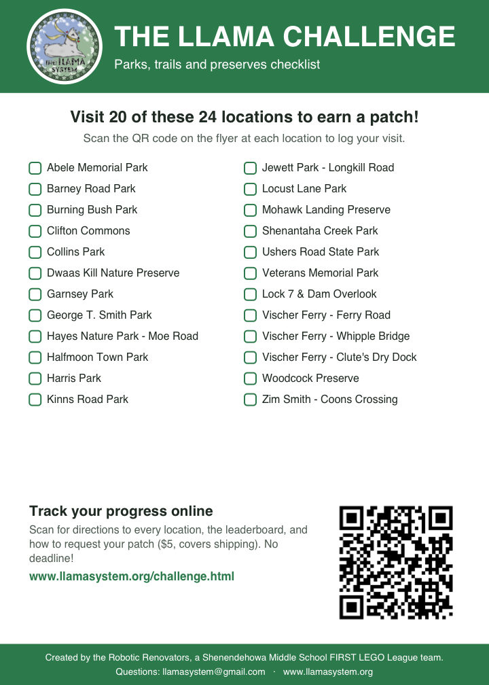

| Rank | Initials | Locations Visited | Last Updated |
|---|---|---|---|
| 1 | JL | 17 - Hayes Nature Park at Moe Road, Vischer Ferry Preserve - Whipple Truss Bridge, Vischer Ferry Preserve - Ferry Road, Kinns Road Park, Garnsey Park, Woodcock Preserve, Mohawk Landing Nature Preserve, Towpath - Lock 7 Lookout, Vischer Ferry Preserve - Clute's Dry Dock, Collins Park, Usher's Road State Park, Zim Smith Trail at Coons Crossing, Shenantaha Creek Park, Burning Bush Park, Veterans Memorial Park, George T. Smith Park, Dwaas Kill Nature Preserve | 08/17/21 |
| 1 | VFL | 17 - Vischer Ferry Preserve - Whipple Truss Bridge, Vischer Ferry Preserve - Ferry Road, Hayes Nature Park at Moe Road, Kinns Road Park, Collins Park, Vischer Ferry Preserve - Clute's Dry Dock, Towpath - Lock 7 Lookout, Mohawk Landing Nature Preserve, Woodcock Preserve, Garnsey Park, Usher's Road State Park, Zim Smith Trail at Coons Crossing, Shenantaha Creek Park, Burning Bush Park, Veterans Memorial Park, George T. Smith Park, Dwaas Kill Nature Preserve | 08/17/21 |
| 2 | AF | 10 - Clifton Commons, Veterans Memorial Park, Dwaas Kill Nature Preserve, Burning Bush Park, Jewett Park, Shenantaha Creek Park, Usher's Road State Park, Zim Smith Trail at Coons Crossing, George T. Smith Park, Abele Memorial Park | 08/17/21 |
| 3 | NB | 9 - Shenantaha Creek Park, George T. Smith Park, Jewett Park, Burning Bush Park, Collins Park, Veterans Memorial Park, Halfmoon Town Park, Vischer Ferry Preserve - Ferry Road, Vischer Ferry Preserve - Whipple Truss Bridge | 08/17/21 |
| 3 | JPCD | 9 - Shenantaha Creek Park, Veterans Memorial Park, George T. Smith Park, Dwaas Kill Nature Preserve, Hayes Nature Park at Moe Road, Vischer Ferry Preserve - Whipple Truss Bridge, Vischer Ferry Preserve - Clute's Dry Dock, Mohawk Landing Nature Preserve, Woodcock Preserve | 08/17/21 |
| 4 | AKC | 8 - Kinns Road Park, George T. Smith Park, Dwaas Kill Nature Preserve, Zim Smith Trail at Coons Crossing, Shenantaha Creek Park, Collins Park, Barney Road Park, Locust Lane/Clifton Knoll Park | 08/17/21 |
| 4 | MD | 8 - Dwaas Kill Nature Preserve, George T. Smith Park, Kinns Road Park, Jewett Park, Mohawk Landing Nature Preserve, Vischer Ferry Preserve - Whipple Truss Bridge, Vischer Ferry Preserve - Clute's Dry Dock, Shenantaha Creek Park | 08/17/21 |
| 5 | BLM | 7 - Woodcock Preserve, Vischer Ferry Preserve - Whipple Truss Bridge, Mohawk Landing Nature Preserve, Towpath - Lock 7 Lookout, Vischer Ferry Preserve - Ferry Road, Vischer Ferry Preserve - Clute's Dry Dock, Collins Park | 08/17/21 |
| 6 | JB | 4 - Kinns Road Park, Garnsey Park, George T. Smith Park, Jewett Park | 08/17/21 |
| 7 | AM | 3 - Woodcock Preserve, Zim Smith Trail at Coons Crossing, Burning Bush Park | 08/17/21 |
| 7 | JL | 3 - Collins Park, Vischer Ferry Preserve - Clute's Dry Dock, Towpath - Lock 7 Lookout | 08/17/21 |
| 7 | JJN | 3 - Clifton Commons, Vischer Ferry Preserve - Ferry Road, Vischer Ferry Preserve - Whipple Truss Bridge | 08/17/21 |
| 7 | CB | 3 - Locust Lane/Clifton Knoll Park, Barney Road Park, Shenantaha Creek Park | 08/17/21 |
| 8 | NB | 2 - Abele Memorial Park, Kinns Road Park | 08/17/21 |
| 8 | MR | 2 - Dwaas Kill Nature Preserve, Clifton Commons | 08/17/21 |
| 8 | AN | 2 - Vischer Ferry Preserve - Ferry Road, Hayes Nature Park at Moe Road | 08/17/21 |
| 8 | E W | 2 - Dwaas Kill Nature Preserve, Kinns Road Park | 08/17/21 |
| 8 | CER | 2 - Vischer Ferry Preserve - Whipple Truss Bridge, Towpath - Lock 7 Lookout | 08/17/21 |
| 8 | ASM | 2 - Hayes Nature Park at Moe Road, Dwaas Kill Nature Preserve | 08/17/21 |
| 8 | DH | 2 - Barney Road Park, Locust Lane/Clifton Knoll Park | 08/17/21 |
| 8 | MA | 2 - Vischer Ferry Preserve - Ferry Road, Vischer Ferry Preserve - Whipple Truss Bridge | 08/17/21 |
| 8 | MT | 2 - Hayes Nature Park at Moe Road, Garnsey Park | 08/17/21 |
| 8 | AB | 2 - Locust Lane/Clifton Knoll Park, Shenantaha Creek Park | 08/17/21 |
| 8 | MM.MM.JM | 2 - Abele Memorial Park, George T. Smith Park | 08/17/21 |
| 8 | LH | 2 - Kinns Road Park, Halfmoon Town Park | 08/17/21 |
| 9 | ?? | 1 - Vischer Ferry Preserve - Whipple Truss Bridge | 08/17/21 |
| 9 | ?? | 1 - Kinns Road Park | 08/17/21 |
| 9 | ?? | 1 - Woodcock Preserve | 08/17/21 |
| 9 | ?? | 1 - Hayes Nature Park at Moe Road | 08/17/21 |
| 9 | MC | 1 - Boyack Road Park | 08/17/21 |
| 9 | CK | 1 - Boyack Road Park | 08/17/21 |
| 9 | ME | 1 - Zim Smith Trail at Coons Crossing | 08/17/21 |
| 9 | LV | 1 - Clifton Commons | 08/17/21 |
| 9 | 1 - Clifton Commons | 08/17/21 | |
| 9 | DDA | 1 - Mohawk Landing Nature Preserve | 08/17/21 |
| 9 | SM | 1 - Garnsey Park | 08/17/21 |
| 9 | AKS | 1 - Garnsey Park | 08/17/21 |
| 9 | ZSJ | 1 - Clifton Commons | 08/17/21 |
| 9 | ML | 1 - Vischer Ferry Preserve - Whipple Truss Bridge | 08/17/21 |
| 9 | LS | 1 - Vischer Ferry Preserve - Clute's Dry Dock | 08/17/21 |
| 9 | KM | 1 - Dwaas Kill Nature Preserve | 08/17/21 |
| 9 | J | 1 - Woodcock Preserve | 08/17/21 |
| 9 | LH | 1 - Vischer Ferry Preserve - Ferry Road | 08/17/21 |
| 9 | BLM | 1 - Garnsey Park | 08/17/21 |
| 9 | DMO | 1 - Vischer Ferry Preserve - Whipple Truss Bridge | 08/17/21 |
| 9 | DD | 1 - Hayes Nature Park at Moe Road | 08/17/21 |
| 9 | JAN | 1 - Shenantaha Creek Park | 08/17/21 |
| 9 | MAM | 1 - Kinns Road Park | 08/17/21 |
| 9 | LAK | 1 - Woodcock Preserve | 08/17/21 |
| 9 | MK | 1 - Dwaas Kill Nature Preserve | 08/17/21 |
| 9 | EM | 1 - Shenantaha Creek Park | 08/17/21 |
| 9 | MP | 1 - Collins Park | 08/17/21 |
| 9 | AM | 1 - Collins Park | 08/17/21 |
| 9 | EB | 1 - Woodcock Preserve | 08/17/21 |
| 9 | OB | 1 - Woodcock Preserve | 08/17/21 |
| 9 | EPA | 1 - Kinns Road Park | 08/17/21 |
| 9 | KH | 1 - Kinns Road Park | 08/17/21 |
| 9 | JO | 1 - Kinns Road Park | 08/17/21 |
| 9 | EP | 1 - Vischer Ferry Preserve - Whipple Truss Bridge | 08/17/21 |
| 9 | JB | 1 - Towpath - Lock 7 Lookout | 08/17/21 |
| 9 | KN | 1 - Clifton Commons | 08/17/21 |
| 9 | DMO | 1 - Vischer Ferry Preserve - Ferry Road | 08/17/21 |
| 9 | DG | 1 - Hayes Nature Park at Moe Road | 08/17/21 |
| 9 | DGS | 1 - Dwaas Kill Nature Preserve | 08/17/21 |
| 9 | RD | 1 - Vischer Ferry Preserve - Clute's Dry Dock | 08/17/21 |
| 9 | CN | 1 - Usher's Road State Park | 08/17/21 |
| 9 | TXS | 1 - Garnsey Park | 08/17/21 |
| 9 | RO | 1 - Collins Park | 08/17/21 |
| 9 | CJD | 1 - Garnsey Park | 08/17/21 |
| 9 | DG | 1 - Hayes Nature Park at Moe Road | 08/17/21 |
| 9 | FLR | 1 - Vischer Ferry Preserve - Whipple Truss Bridge | 08/17/21 |
| 9 | BW | 1 - Hayes Nature Park at Moe Road | 08/17/21 |
| 9 | RLG | 1 - Hayes Nature Park at Moe Road | 08/17/21 |
| 9 | JP | 1 - Hayes Nature Park at Moe Road | 08/17/21 |
| 9 | HO | 1 - Dwaas Kill Nature Preserve | 08/17/21 |
| 9 | PRM | 1 - Vischer Ferry Preserve - Whipple Truss Bridge | 08/17/21 |
| 9 | VLM | 1 - Towpath - Lock 7 Lookout | 08/17/21 |
| 9 | JP | 1 - Garnsey Park | 08/17/21 |
| 9 | LS | 1 - Garnsey Park | 08/17/21 |
| 9 | BS | 1 - Dwaas Kill Nature Preserve | 08/17/21 |
| 9 | BM | 1 - Burning Bush Park | 08/17/21 |
| 9 | VR | 1 - Vischer Ferry Preserve - Whipple Truss Bridge | 08/17/21 |
| 9 | RF | 1 - Clifton Commons | 08/17/21 |
| 9 | KO | 1 - Collins Park | 08/17/21 |
| 9 | JSC | 1 - Veterans Memorial Park | 08/17/21 |
| 9 | AK | 1 - Clifton Commons | 08/17/21 |
| 9 | JW | 1 - Kinns Road Park | 08/17/21 |
| 9 | KLH | 1 - Collins Park | 08/17/21 |
| 9 | IFL | 1 - Collins Park | 08/17/21 |
| 9 | HI | 1 - Clifton Commons | 08/17/21 |
| 9 | EKB | 1 - Garnsey Park | 08/17/21 |
| 9 | RY | 1 - Towpath - Lock 7 Lookout | 08/17/21 |
| 9 | MM | 1 - Kinns Road Park | 08/17/21 |
| 9 | PG | 1 - Kinns Road Park | 08/17/21 |
| 9 | EF | 1 - Vischer Ferry Preserve - Whipple Truss Bridge | 08/17/21 |
| 9 | ME | 1 - Hayes Nature Park at Moe Road | 08/17/21 |
| 9 | MR | 1 - Woodcock Preserve | 08/17/21 |
| 9 | SG | 1 - Zim Smith Trail at Coons Crossing | 08/17/21 |
| 9 | SAR | 1 - Kinns Road Park | 08/17/21 |
| 9 | CM | 1 - Garnsey Park | 08/17/21 |
| 9 | JP | 1 - Zim Smith Trail at Coons Crossing | 08/17/21 |
| 9 | JM | 1 - Hayes Nature Park at Moe Road | 08/17/21 |
| 9 | RMP | 1 - Collins Park | 08/17/21 |
| 9 | AF | 1 - Garnsey Park | 08/17/21 |
| 9 | BS | 1 - Usher's Road State Park | 08/17/21 |
| 9 | KL | 1 - Usher's Road State Park | 08/17/21 |
| 9 | YANG | 1 - Vischer Ferry Preserve - Ferry Road | 08/17/21 |
| 9 | KL | 1 - Kinns Road Park | 08/17/21 |
| 9 | NRS | 1 - Usher's Road State Park | 08/17/21 |
| 9 | SBB | 1 - Garnsey Park | 08/17/21 |
| 9 | LB | 1 - Shenantaha Creek Park | 08/17/21 |
| 9 | TL | 1 - Towpath - Lock 7 Lookout | 08/17/21 |
| 9 | AKM | 1 - Hayes Nature Park at Moe Road | 08/17/21 |
| 9 | DS | 1 - Kinns Road Park | 08/17/21 |
| 9 | AMS | 1 - Veterans Memorial Park | 08/17/21 |
| 9 | AC | 1 - George T. Smith Park | 08/17/21 |
| 9 | JM | 1 - Kinns Road Park | 08/17/21 |
| 9 | AJD | 1 - Usher's Road State Park | 08/17/21 |
| 9 | CMS | 1 - Hayes Nature Park at Moe Road | 08/17/21 |
| 9 | SS | 1 - Barney Road Park | 08/17/21 |
| 9 | EST | 1 - Mohawk Landing Nature Preserve | 08/17/21 |
| 9 | BH | 1 - Garnsey Park | 08/17/21 |
| 9 | AV | 1 - Collins Park | 08/17/21 |
| 9 | DC | 1 - Collins Park | 08/17/21 |
| 9 | JD | 1 - Hayes Nature Park at Moe Road | 08/17/21 |
| 9 | KKO | 1 - Dwaas Kill Nature Preserve | 08/17/21 |
| 9 | KS | 1 - Shenantaha Creek Park | 08/17/21 |
| 9 | ERF | 1 - Garnsey Park | 08/17/21 |
| 9 | JD | 1 - Vischer Ferry Preserve - Ferry Road | 08/17/21 |
| 9 | MAM | 1 - Vischer Ferry Preserve - Whipple Truss Bridge | 08/17/21 |
| 9 | EG | 1 - Vischer Ferry Preserve - Ferry Road | 08/17/21 |
| 9 | MH | 1 - Garnsey Park | 08/17/21 |
| 9 | LMG | 1 - Hayes Nature Park at Moe Road | 08/17/21 |
| 9 | BG | 1 - Mohawk Landing Nature Preserve | 08/17/21 |
| 9 | ACW | 1 - Hayes Nature Park at Moe Road | 08/17/21 |
| 9 | KAG | 1 - Zim Smith Trail at Coons Crossing | 08/17/21 |
| 9 | HC | 1 - Abele Memorial Park | 08/17/21 |
| 9 | HENRY | 1 - Hayes Nature Park at Moe Road | 08/17/21 |
| 9 | MJC | 1 - Usher's Road State Park | 08/17/21 |
| 9 | KB | 1 - Zim Smith Trail at Coons Crossing | 08/17/21 |
| 9 | AEW | 1 - Hayes Nature Park at Moe Road | 08/17/21 |
| 9 | SH | 1 - Hayes Nature Park at Moe Road | 08/17/21 |
| 9 | TF | 1 - George T. Smith Park | 08/17/21 |
* The cost for the patch is $5 which covers shipping. Payment can be made via venmo. To request a patch and payment info, send your information including your email and mailing address to llamasystem@gmail.com.
^ Due to the fact that we cannot put flyers up at these parks, you can email us pictures of these parks to verify you have been there.
